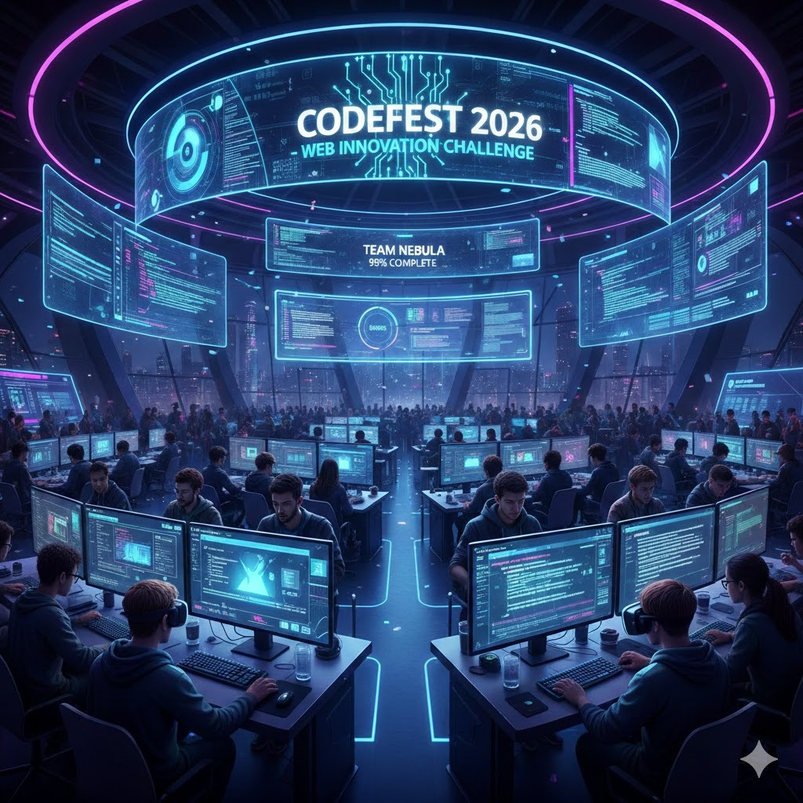
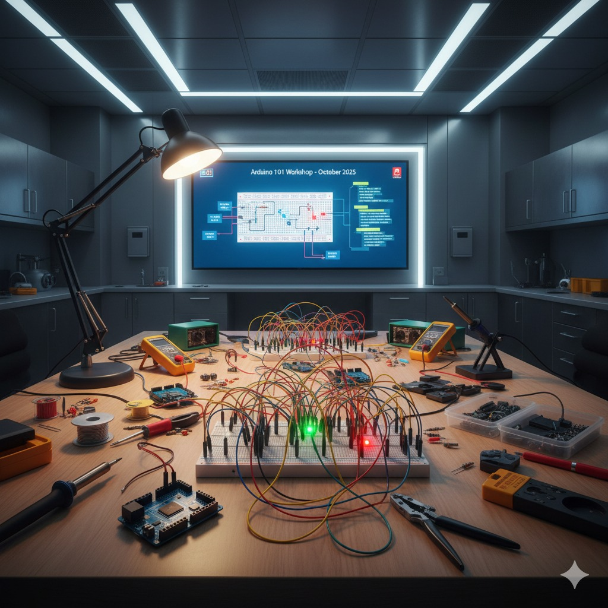
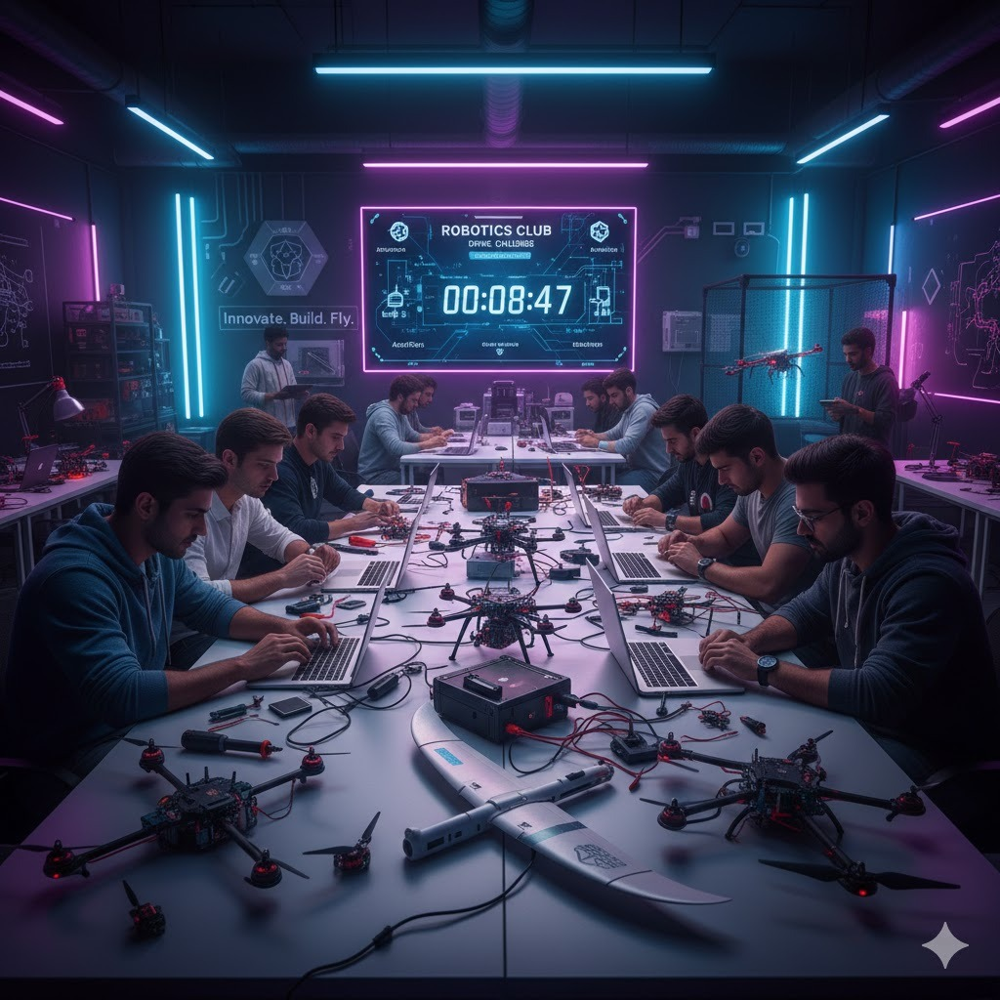
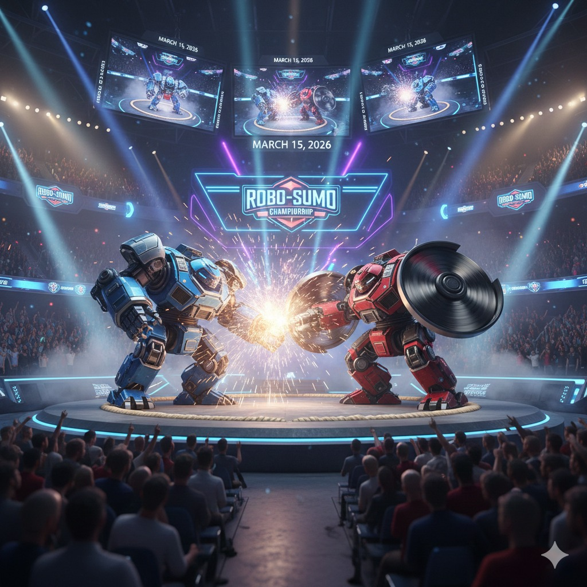
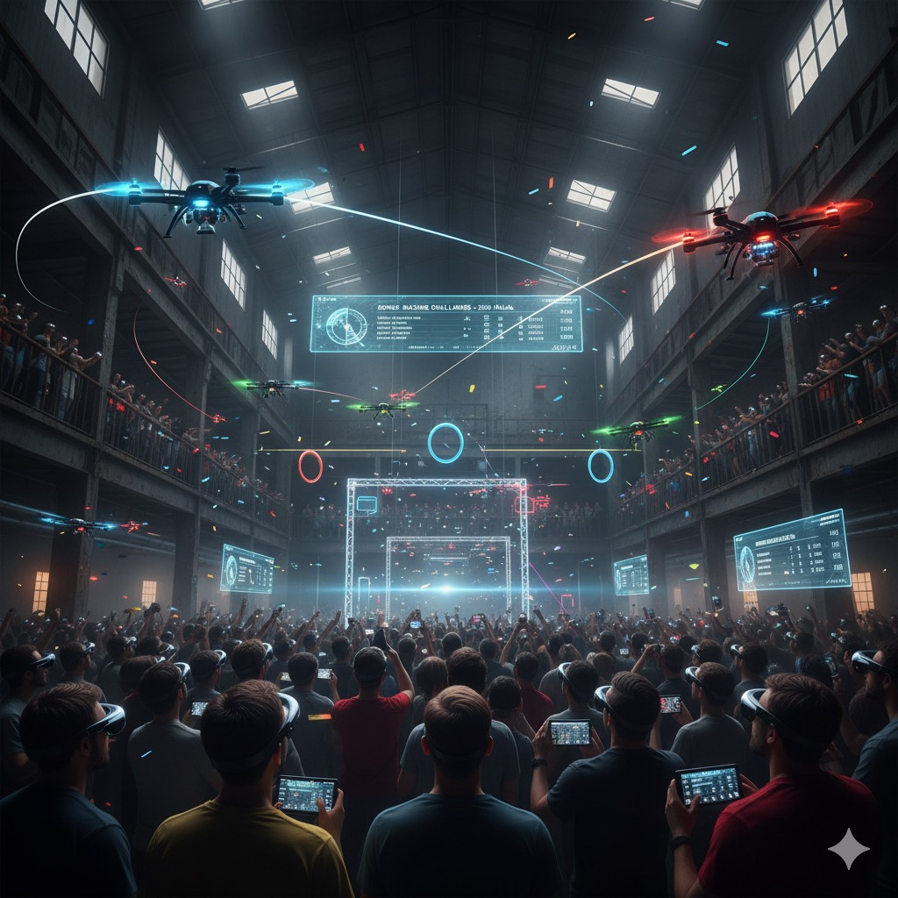
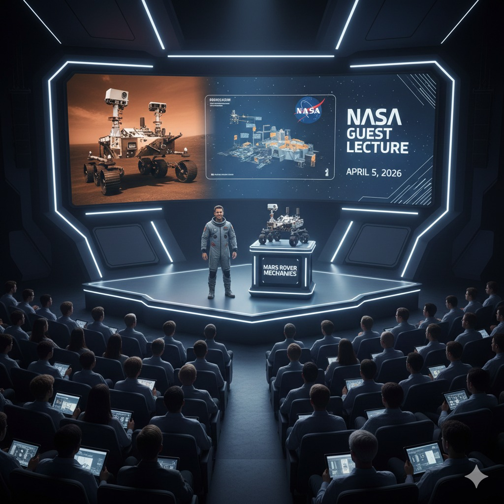
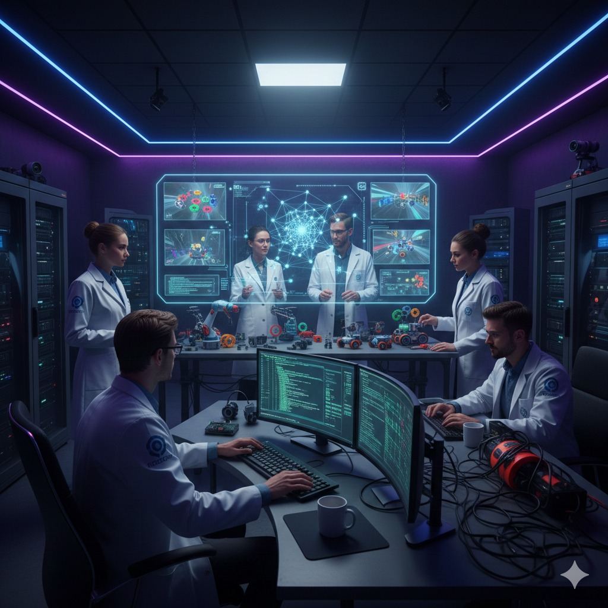
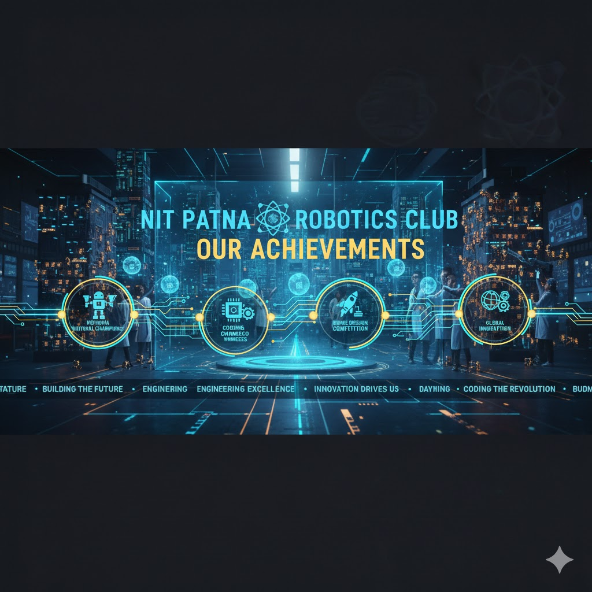

The annual Web Innovation Challenge has become a cornerstone of the technical calendar at NIT Patna, fostering a long-standing tradition of digital creativity. Organized each year, this flagship event challenges students to push the boundaries of modern web technologies and user experience. It serves as a vital platform for budding developers to refine their skills, year after year, ensuring the institute remains at the forefront of the evolving tech landscape.

The annual Arduino Innovation Workshop stands as a landmark event at NIT Patna, bridging the gap between theoretical circuits and real-world hardware applications. Each year, students gather to master microcontroller programming, sensor integration, and rapid prototyping. This hands-on tradition empowers participants to transform abstract ideas into functional automated systems, reinforcing the institute’s legacy of nurturing practical engineering talent and hardware innovation.
The annual Robotics Club Induction Program at NIT Patna marks the beginning of an exciting journey for tech enthusiasts. Designed to welcome freshers into the world of automation, the session features interactive demonstrations of Robowars and line-following bots, alongside insightful talks from senior mentors. This recurring event serves as a gateway for students to join a legacy of innovation, encouraging them to move from theoretical concepts to hands-on hardware engineering.

The annual Drone Making Competition remains one of the most anticipated spectacles at NIT Patna, pushing the limits of aerodynamics and flight control. Each year, student teams design and assemble custom quadcopters, competing in categories ranging from obstacle navigation to payload delivery. This flagship event fosters a culture of precision engineering and real-time problem solving, solidifying the club's role in advancing unmanned aerial vehicle (UAV) technology within the institute.




The Robotics Club at NIT Patna has achieved significant recognition, notably with a member winning 2nd prize at the Startup Bihar Idea Festival 2025 for a VTOL drone concept, and by designing an autonomous aerial vehicle (ANAV) for the ISRO IRoC-U 2025 challenge, showcasing advanced tech like EKF and LiDAR. They actively participate in events like Smart India Hackathon, host competitions such as "Chakravyuh", and build innovative projects like air quality monitoring drones, reflecting a strong focus on autonomous systems, real-world applications, and innovation in automation.
